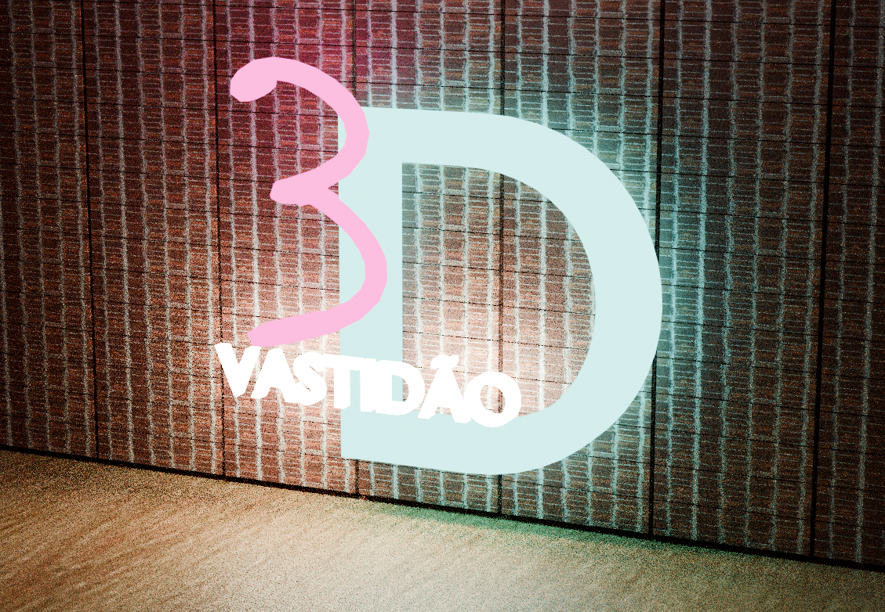
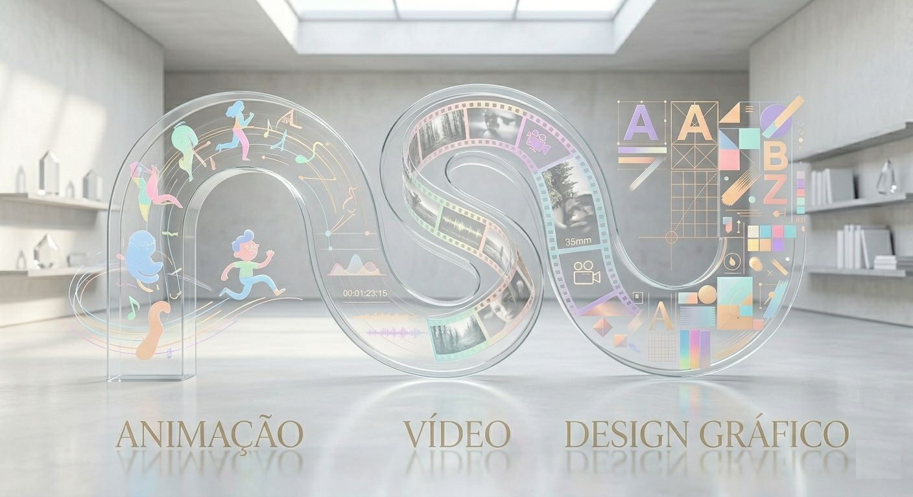

Vera Antunes

Alentejo, Portugal

Pedido de informação

Sexo: Feminino | Data de Nascimento: 07/05/1980 | Nacionalidade: Portuguesa
CV INTERATIVO: Clica nos botões azuis abaixo para explorar • 📥 Guardar como PDF (baixar versão estática)
Alentejo, Portugal
Pedido de informação
Sexo: Feminino | Data de Nascimento: 07/05/1980 | Nacionalidade: Portuguesa
Formações Modulares Certificadas - IEFP
Designer de Joalharia de Autor & Artista Independente
Percurso em Joalharia Técnica e Consultoria
Diploma 12º Ano
Técnica de Multimédia
Operador/a informática
Programador/a de Informática
Escola Artística António Arroio


Materna: Português | Inglês: A2

Criação de programa de cálculo científico estruturado.

Desenvolvimento de ecossistema para gestão de conteúdos.

Criação de interfaces interativas para a comunidade global de jogos.

Modelação, iluminação & renderização em Blender.

Criação multimédia com Adobe Creative Suite e IA.

Estruturação de modelo de negócio e proatividade.

Calculadora Científica - Interface de utilizador
Desenvolvimento de uma Calculadora Científica completa em C++, focada na modularidade e eficiência. O projeto integra múltiplos módulos de cálculo avançado e gestão de dados.
Plataforma autoral criada em Google Sites para materializar projetos criativos, unindo o design digital à construção manual.

Desenvolvimento completo de interface web para uma autarquia local, aplicando competências de edição web e design.

Criação de elementos visuais e prototipagem de interfaces (Auto-Hunting Pass) para a comunidade global de gaming.

Planeamento visual quadro a quadro da animação
A Padeirinha ganha vida através da animação 2D. Uma homenagem à música tradicional alentejana, criada com IA, vetorizada em Illustrator e animada no Adobe Animate.
UFCD 0141 | 2025/2026
Do conceito à execução: uma identidade visual criada do zero, unindo precisão técnica e elegância moderna.
Este projeto nasceu da crença de que a vida é feita de momentos que nos preenchem. Criámos um conceito onde cada rota é um sabor e cada pôr-do-sol uma memória.


Desenvolvimento de um guia técnico detalhado sobre a instalação e configuração de Redes Locais (LAN).
Levantamento de Necessidades 🔍
Orçamento Detalhado 🔍
Carta de Condução: Categoria B